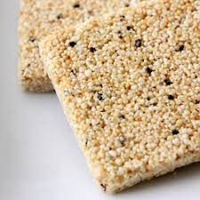
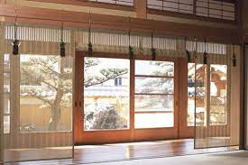
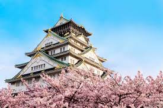
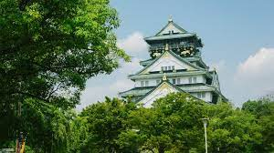
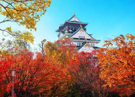
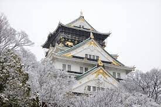

Osaka is a charming, relaxed city best known for its food, fun and nightlife—with some history and culture peeking through
Osaka is only a short shinkansen ride from Tokyo, but has a very different personality to Japan's capital city. of nearby Arashiyama.Hop off the bullet train into an area of exciting nightlife, delicious food and straight-talking, friendly locals. Along with plenty of shopping and modern attractions, Osaka also has a historical side, the highlight of which is Osaka Castle.
The castle is a great place to discover more about Japanese history and to wander the beautiful grounds, especially during cherry blossom season in April when the sakura blooms and the weather is often at its best.
HOW TO GET THERE
From Tokyo, take the Tokaido-Sanyo Shinkansen to Shin-Osaka Station. The trip takes approximately two and a half hours.
From Shin-Osaka Station, transfer to the JR local line and ride to Osaka Station. From Kansai International Airport (KIX), take the Nankai or JR lines to Tennoji or Namba stations.
| Cherry Blossoms |
|---|
| Forecast of first bloom |
| 19 Mar 2021 |
| Forecast of full bloom |
| 28 Mar 2021 |
Don't miss
- The neon lights of Dotombori Bridge and Osaka’s Minami area
- Exploring Osaka Castle Park and Expo Memorial Park, the site of Expo '70s
- Partaking in major seasonal festivals including Tenjin Matsuri, Kishiwada Danjiri and Ebessan
- Indulging in famous culinary delights, particularly in neighborhoods such as Tenma and Ura Namba
Local Specialties
| 
Iwa Okoshi Iwa okoshi are candied puffs made from millet. They've been produced in Osaka since 1185. Think of them as cereal bars with eight centuries of history behind them. |
 Okonomiyaki
OkonomiyakiOkonomiyaki are savory pancakes made with shredded cabbage, flour, egg and dashi, and either cooked at your table for you or left for you to cook yourself. The latter option is much more fun. A long list of toppings and combinations are available, with some of the more common ones being pork, shrimp, octopus and cheese. |
 Takoyaki
TakoyakiBits of octopus combined with pickled ginger and green onions, mixed in a batter and grilled in a special mold. The resulting spheres are crispy on the outside and tender on the inside. An Osaka classic topped with Worcestershire sauce, ginger and seaweed flakes. |

Osaka Kongo Bamboo Blinds Bamboo blinds predate the Heian period (794-1185), and were first used inside the Imperial palace and the residences of nobles. Finely crafted and elegant Osaka Kongo sudare, made of quality bamboo from the foot of nearby Mt. Kongo, have a beauty and ambiance that is quintessentially Japanese. |
Seasonal Highlights
| 
Spring A sea of pink fills the prefecture's parks and boulevards, and the city comes out in full force to celebrate the gorgeous views at Osaka Castle, Yodogawa Riverside Park and the Osaka Mint. |

Summer Festive spirits and outdoor amusements take everyone's minds off the stifling heat. Osaka's foremost festival, the Tenjin Matsuri, thrills the crowds and many head for the prefecture's southern beaches. Frequent firework displays brighten the night. |
| 
Autumn As summer's humidity dissipates, the leaves turn fiery red and provide a striking backdrop for outdoor adventure. The Midosuji Parade brings a vibrant procession of floats and marching bands down Osaka's grand boulevard. |

Winter Holiday illuminations light up the urban areas and end-of-year festivities get into full swing. Runners from all over the world gather for the Osaka International Women's Marathon. |